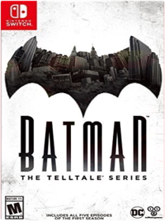
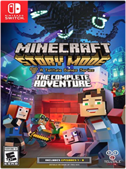
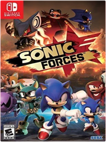
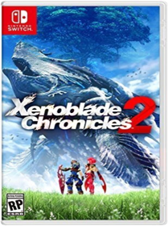

Batman: The Telltale Series Season 1  Warner Home Video - GamesEnter the fractured psyche of Bruce Wayne in this dark and violent new story from the award-winning creators of The Walking Dead – A Telltale Games Series, and discover the powerful and far-reaching consequences of your choices as the Dark Knight. As Batman, you’ll encounter classic allies and adversaries, and as Bruce, you’ll learn the true meaning of what it means to be the man behind the cowl. Batman – The Telltale Series comes to retail on Nintendo Switch and includes all five episodes of the first season.Bayonetta 2 NintendoBundle Package with both the Bayonetta 2 Game Card and a download code for Bayonetta game Bayonetta 2 Bayonetta is a butt-kicking, havoc-wreaking witch who wields sweet weapons like pistols, whips, hammers, flamethrowers, and poison bows. But it's not just about brawn-it's also about style. Bayonetta is deadly but sleek, with moves like Witch Time that slows down time itself, and the all-new Umbran Climax-a special magic attack that summons Infernal Demons to devastate enemies. The Bayonetta 2 game also features an online and local wireless 2-player cooperative mode where players bet halos on their performance and work together to amplify their sass, cause destruction, and score some riches. You can even dress Bayonetta up in five Nintendo-themed costumes-Princess Peach, Princess Daisy, Link, Fox McCloud, and Samus Aran. Bayonetta This is the prequel to the Bayonetta 2 game, and it's every bit as sassy, destructive, and epic as you'd expect. Bayonetta is the fashionable and foxy unholy offspring of an Umbra Witch and a Lumen Sage, and she's lost her memory after being asleep at the bottom of a lake for 500 years. Use Wicked Weaves to summon Infernal Demons, dodge enemies' dangerous attacks to slow down time, and punish angels with deadly devices. You can even dress Bayonetta up in four Nintendo-themed costumes-Princess Peach, Princess Daisy, Link, and Samus Aran.Captain Toad: Treasure Tracker - Nintendo Switch NintendoThe Captain Toad: treasure tracker game, which originally launched for the Wii U system to critical acclaim and adoration by fans, is coming to the Nintendo Switch system. This version Includes new stages based on the various kingdoms in the Super Mario Odyssey game. Also, play with a friend by sharing a pair of Joy-Con Controllers. While One player controls Captain Toad, the other can assist with things like turnip cover Fire. Captain Toad: treasure tracker launches for Nintendo Switch on July 13.Diablo 3 Eternal Collection Blizzard EntertainmentSigns of the end times draw powerful heroes from all over sanctuary to Rise up and defeat an evil reborn the diablo III: Eternal collection is an unparalleled action role-playing experience and contains diablo III, the reaper of souls expansion set, and the necromancer class together in One definitive volume. Rise as One of humanity's last defenders -crusader, barbarian, witch doctor, demon Hunter, Monk, wizard, or necromancer-and level up with devastating powers and legendary loot. Lay waste to legions of evil throughout all five acts of the diablo III storyline, or explore the open world in adventure mode to Hunt bounties on the Elder evils that lurk throughout the mortal realms. Take part in seasonal events and earn exclusive rewards including armor sets, companion pets, and other fiendishly cool goodies. Nintendo Switch exclusives Includes switch-exclusive bonus cosmetics, Featuring a full intimidating armor transmog set befit for the King of all evil, Ganondorf play with up to 4 friends online, offline via local coop, or on a single Console couch-coop style supports all Switch Controller configurations, including single and dual Joy-Con action. This title has been rated blood and gore, partial nudity, violence.Donkey Kong Country: Tropical Freeze - Nintendo Switch NintendoBarrel-blast into a critically acclaimed Donkey Kong adventure as this beloved franchise makes its Nintendo Switch debut with a banana-bunch of new features. Traverse islands packed with platforming perfection and nonstop action as the classic Kongs in the original game, or mix things up by playing the story as Funky Kong in new Funky Mode! Entertainment Software Rating Board (ESRB) Content Description: Cartoon violenceFire Emblem Warriors NintendoClash with legions of soldiers and Fierce monsters as Marth, Xander, Corrin, and other Fire Emblem heroes unleashing over-the-top-powerful Dynasty Warriors-style moves. Take direct control of known and original Fire Emblem characters, issue them strategic commands in the midst of battle, pair up heroes to unleash stunning attacks, and more. Unlock new playable heroes, each with their own unique moves, special attacks, weapon types, and voiced dialogue in this large-scale action game from the Hyrule Warriors team.Hyrule Warriors: Definitive Edition NintendoCut down enemy hordes as Legend of Zelda characters—in full 1080p TV mode—or in two-player mode on one system! Link and Zelda can battle in costumes from the Legend of Zelda: Breath of the Wild game, while Tetra and King Daphnes appear in scenes based on the Legend of Zelda: The Wind Waker game. Find and care for fairies who will aid you in battle!The Legend of Zelda: Breath of the Wild NintendoStep into a world of discovery, exploration, and adventure in The Legend of Zelda: Breath of the Wild, a boundary-breaking new game in the acclaimed series. Travel across vast fields, through forests, and to mountain peaks as you discover what has become of the kingdom of Hyrule in this stunning Open-Air Adventure. Now on the Nintendo Switch console, your journey is freer and more open than ever. Take your system anywhere, and adventure as Link any way you like.Discover a world as never before seen: by making your own path, choices, and consequencesIngenuity is the key to survival: find multiple solutions to tons of dynamic puzzlesSurprises hide around every corner: scavenge weapons, armor, plants, animals, and moreLive off the land: find weapons and armor, cook food, and brew elixirsUtilize special technology: the in-game Sheikah Slate controls objects and enemies in fun waysGear up: many weapons and armor have unique stats, resistances, effects, and durabilityShrines offer hundreds of clever challenges even veterans won’t see comingCompatible amiibo include the Wolf Link amiibo figure, figures from the Legend of Zelda 30th Anniversary amiibo series, and figures from The Legend of Zelda: Breath of the Wild amiibo series. Each one will offer Link in-game items that may just come in handy.Lego City Undercover Warner Home Video - GamesJoin the Chase! In LEGO CITY Undercover, play as Chase McCain, a police officer who's been tasked with going undercover to hunt down the notorious - and recently escaped - criminal Rex Fury and putting an end to his city-wide crime wave. With two player co-op, friends can explore the sprawling open-world metropolis that is LEGO City, with more than 20 unique districts to investigate, car thieves to bust, hilarious movie references to discover, vehicles to drive, and hundreds of collectibles. LEGO CITY Undercover brings together witty, original storytelling with signature LEGO humor to create a fun-filled experience for players of all ages to enjoy.Lego Worlds Warner Home Video - GamesEXPLORE. DISCOVER. CREATE. TOGETHER. LEGO Worlds is an open environment of procedurally-generated Worlds made entirely of LEGO bricks which you can freely manipulate and dynamically populate with LEGO models. Create anything you can imagine one brick at a time, or use large-scale landscaping tools to create vast mountain ranges and dot your world with tropical islands. Drop in prefabricated structures to build and customize any world to your liking. Explore using helicopters, dragons, motorbikes or even gorillas and unlock treasures that enhance your gameplay. Watch your creations come to life through characters and creatures that interact with you and each other in unexpected ways. In LEGO Worlds, anything is possible!Mario + Rabbids Kingdom Battle UBI SoftTwo worlds collide in Mario + Rabbids Kingdom Battle!
The Mushroom Kingdom has been torn apart by a mysterious vortex, transporting the chaotic Rabbids into this once-peaceful land. To restore order, Mario, Luigi, Princess Peach, and Yoshi must team up with a whole new crew: four Rabbids heroes! Together, they will battle with weapons through four worlds filled with combat, puzzles, and unpredictable enemies.
Developed exclusively for the Nintendo Switch system, Mario + Rabbids Kingdom Battle is the best of the Mario and Rabbids franchises, combining all that you love about Mario’s iconic universe with the side-splitting antics of the Rabbids.Mario Kart 8 Deluxe Nintendo Switch Software Mario Kart 8 Deluxe. Hit the road with the definitive version of Mario Kart 8 and play anytime, anywhere! Race your friends or battle them in a revised battle mode on new and returning battle courses. Play locally in up to 4-player multiplayer in 1080p while playing in TV Mode. Every track from the Wii U version, including DLC, makes a glorious return. Plus, the Inklings appear as all-new guest characters, along with returning favorites, such as King Boo, Dry Bones, and Bowser Jr.!Minecraft: Story Mode  Telltale GamesBE THE HERO OF A GRAND ADVENTURE IN THE MINECRAFT UNIVERSE! Embark on a perilous quest across the Over world, to the End, and beyond. While at EnderCon in hopes of meeting Gabriel the Warrior, you and your friends discover that something is wrong. something dreadful. Terror is unleashed, and you must set out on a quest to find The Order of the Stone if you are to save your world from oblivion. With a team of friends at your side, and a troubled land in need of heroes, your decisions - what you say and do - drive the story around you, so choose wisely!Monopoly UBI SoftAmerica's favorite family board game, monopoly, makes its debut on Nintendo Switch system with new ways to play! experience three unique 3D boards at home or on-the-go with up to six players in total, or take your game online and challenge players in quick matches. Customize your game by selecting from six official House rules chosen by monopoly fans around the world. Don't have time for a full game? speed it up with special goals that shorten play sessions, and actions cards to move you around the board and personalize your opponents. Build your empire and trade your way to victory!Monster Hunter Generations Ultimate CapcomMonster Hunter Generations Ultimate is the follow-up to Monster Hunter Generations, and marks the Monster Hunter series' debut on Nintendo Switch as an exclusive. Hunters can face off against the largest roster of unique monsters in any Monster Hunter game to date. Players take on the role of a brave hunter challenging larger than life beasts that yield valuable resources used for crafting unique weapons and equipment. Accept hundreds of quests solo or with friends in this nostalgic look back at the series' beginnings and evolutions. Along the hunter's journey, players must defend each of the game's four villages from major threats known as the Fated Four, plus an even more dangerous new Elder Dragon. Entertainment Software Rating Board (ESRB) Content Description: Blood, crude humor, mild violence, mild suggestive themes This game features a blend of classic gameplay and unique new twists, brand new explorable areas and monsters, plus returning fan-favorites like the lightning fast Zinogre and the stealthy long-tailed Nargacuga. Fans will be able to play in tabletop mode or in handheld mode on-the-go with up to three other hunters locally or online when it releases on August 28, 2018.Namco Museum Arcade Pac Bandai Namco Entertainment AmericaSave your quarters and bring the arcade home with the ultimate 2-in-1 game 'pac', NAMCO MUSEUM ARCADE PAC! Enjoy the nostalgic classics in "Namco Museum" and the flashy Maze madness of "PAC-MAN CHAMPION EDITION 2 PLUS" with friends or solo, at home or on the go for exciting arcade fun wherever you are - exclusively for the Nintendo Switch!Nintendo Labo Variety Kit Nintendo Labo Robot Kit NintendoWith the Nintendo Labo Toy-Con 02 Robot Kit, you'll be able to combine the technology of the Nintendo Switch with the fun of DIY creations. Create a wearable robot suit with the included cardboard and accessoriesOctopath Traveler NintendoEight travelers. Eight adventures. Eight roles to play in a new world brought to life by Square Enix. Explore each traveler's story and use their abilities in and out of battle. Will you expand your horizons as the Merchant or track down a traitor as the Warrior? Where will you go? Who will join you? You alone can choose your path. Step into the shoes of a traveler to inherit their struggles and strengths. Use each character's special abilities to interact with the world and enhance your tactics in turn-based battles. The Dancer's alluring charm leads followers into battle, whereas the Apothecary can mix items to heal allies or unleash explosive attacks. Discover enemy weaknesses and target them to break through their defenses. Store Boost Points with each turn and then spend them at strategic times to strengthen abilities, chain attacks, or provide aid. Choose the path you wish to walk and discover what lies beyond the horizon.Pokemon Let's Go, Pikachu! NintendoPokemon Let's Go Pikachu for Nintendo Switch
Take your Pokémon journey to the Kanto region with your energetic partner, Pikachu, to become a top Pokémon trainer as you battle other trainers. Use a throwing motion to catch Pokémon in the wild with either one Joy-Con controller or Poké Ball Plus accessory, which will light up, vibrate, and make sounds to bring your adventure to life. Share your adventure with family or friends in two-player action using a second Joy-Con or Poké Ball Plus (sold separately). You can even connect to the Pokémon GO app using a compatible smartphone to bring over Pokémon originally discovered in the Kanto region. Features Become a top Pokémon trainer on an adventure with PikachuEncounter Pokémon in the Kanto regionPlay the entire game with a single Joy-Con controller or use the Poké Ball Plus accessory, which will light up, vibrate and make sounds to brig your adventure to life, This title has been rated everyone mild cartoon violence.Resident Evil Revelations Collection Sonic Forces  Sega of AmericaJoin an epic high-speed fight to save a world decimated by Dr. Egg man and a mysterious villain in the newest game from the team that made Sonic Colors and Sonic Generations. Experience fast-paced action as Modern Sonic, catapult past perilous platforms as Classic Sonic, and use powerful new gadgets as your very own Custom Hero Character.Starlink Battle for Atlas UBI SoftIn Starlink: Battle for Atlas™, you are part of a group of heroic interstellar pilots, dedicated to free the Atlas Star System from Grax and the Forgotten Legion. Featuring special guest pilot Fox McCloud and his Arwing. Battle in exclusive Star Wolf missions! - 1 Starlink video game with Star Fox story mission - 1 Arwing starship - 1 Fox McCloud - 1 Flamethrower Weapon - 1 Frost Barrage Weapon - 1 Digital Shredder Weapon - 1 Mason Rana Pilot - 1 Digital Zenith starship - 1 Controller Mount - 1 Starlink posterSuper Bomberman R KonamiSuper Bomberman R makes full use of the Nintendo Switch system capabilities, which enables gamers to play wherever, whenever and with whomever they choose. Super Bomberman R offers a 'Battle' mode where up to eight players are dropped within a maze until the 'last man standing' is declared the winner. There is also a 'Story' mode where one to two players work cooperatively to clear a series of 50 stages in order to save the galaxy.Super Mario Odyssey NintendoEmbark on a cap-tivating, globe-trotting adventure! Join Mario on a massive, globe-trotting 3D adventure and use his incredible new abilities to collect Moons so you can power up your airship, the Odyssey, and rescue Princess Peach from Bowsers wedding plans! This sandbox-style 3D Mario adventure, the first since 1996s beloved Super Mario 64 and 2002s Nintendo GameCube classic Super Mario Sunshine is packed with secrets and surprises, and with Marios new moves like cap throw, cap jump and capture, youll have fun and exciting gameplay experiences unlike anything youve enjoyed in a Mario game before. Get ready to be whisked away to strange and amazing places far from the Mushroom Kingdom!Super Mario Party NintendoInspired by original Mario Party board game play, the beloved series is coming to Nintendo Switch with new minigames and play styles that make use of the Joy-Con controllers. The Super Mario Party game includes features like character-exclusive Dice Blocks that add depth to players’ strategy.Super Smash Bros. Ultimate NintendoGaming icons clash in the ultimate brawl you can play anytime, anywhere! Smash rivals off the stage as new characters Simon Belmont and King K. Rool join Inkling, Ridley, and every fighter in Super Smash Bros. history. Enjoy enhanced speed and combat at new stages based on the Castlevania series, Super Mario Odyssey, and more!
Having trouble choosing a stage? Then select the Stage Morph option to transform one stage into another while battling—a series first! Plus, new echo fighters Dark Samus, Richter Belmont, and Chrom join the battle. Whether you play locally or online, savor the faster combat, new attacks, and new defensive options, like a perfect shield. Jam out to 900 different music compositions and go 1-on-1 with a friend, hold a 4-player free-for-all, kick it up to 8-player battles and more! Feel free to bust out your GameCube controllers—legendary couch competitions await—or play together anytime, anywhere!Xenoblade Chronicles 2  NintendoXenoblades Chronicles 2 for Nintendo Switch
Lost in a sea of clouds, entire civilizations rest on the backs of Titans. As the giant beasts march toward death, the last hope is a scavenger named Rexand Pyra, a living weapon known as a Blade. Can you find the fabled paradise she calls home? Command a group of Blades and lead them to countless strategic victories before the world ends. Features Search for the ultimate paradise, Elysium, with your companion Pyra.Explore an endless ocean of clouds, where the last remnants of civilization live on the backs of colossal beasts called Titans. Experience the story of Rex and his new friend Pyra, a mysterious being known as a Blade who grants him tremendous power. Together, search for Pyras long lost home Elysium, the ultimate paradise for all of humanity.A new story in the Xenoblade Chronicles seriesThe next adventure is on the Nintendo Switch consoleset on the backs of colossal, living TitansDiscover each Titans diverse regions, culture, wildlife, equipment, and hidden secretsFind, bond with, and command weaponized life forms known as Blades to earn abilities and enhance themUncover the history of Alrest and the mystery of its endless ocean of clouds |


 Made with Delicious Library
Made with Delicious Library